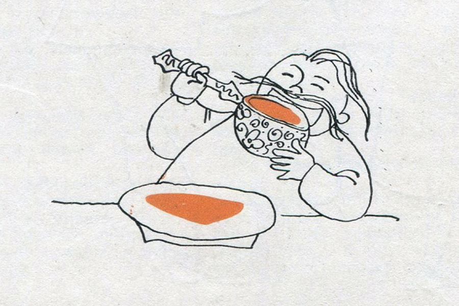

Історія борщу
У 1598 році православний полеміст Іван Вишенський писав про селян, які з однієї мисочки «поливку або борщик хлепчют». Є згадка, що у перші роки XVII століття якийсь чоловік випив «три миски борщика». А в 1619 році є спогад про класичний обідній набір: «І пироги там були, та й борщика зварили». В усіх трьох джерелах назва страви використана у пестливій формі — «борщик», що збереглась у деяких регіонах України й донині.
З першої половини XVII століття з’являються прізвища, похідні від слова «борщ»: Борщовський, Борщ, Борщенко. У словнику української мови Бориса Грінченка від 1907 року є понад десяток слів, які теж виникли від назви страви: борщичок, борщисько, борщувати, борщівниця тощо. Є чимало архівних згадок, які підтверджують, що борщ протягом століть полюбляли як звичайні українці, так і відомі урядовці. Тож історія борщу безперервна й багата.

Як приготувати справжній український борщ:
Класичний український борщ:
- Вода – 1,5-2 л.
- свинина або яловичина на кістці – 400 г
- картопля – 4 шт. (середні)
- буряк – 2 шт. (невеликі)
- морква – 1 шт.
- цибуля – 3 шт. (середні)
- капуста білокачанна свіжа – 300 г
- томатна паста – 2 ст. л.
- соняшникова олія – 4-5 ст. л.
- лимонна кислота – дрібка
- сіль, лавровий лист, зелень – за смаком.
Спершу варимо бульйон. У каструлю наливаємо 1,5-2 літра води. Додаємо м’ясо й ставимо на середній вогонь. Перед закипанням знімаємо піну. Щойно бульйон закипить, накриваємо кришкою і варимо на повільному вогні годину-півтори.
Тим часом готуємо засмажку. Чистимо буряк, моркву та цибулю. Буряк натираємо на крупній тертці, а моркву – на середній. Цибулю нарізаємо кубиками.
На середньому вогні в сковороді розігріваємо олію, висипаємо туди цибулю та моркву, смажимо 5 хвилин. Потім додаємо буряк (його можна посипати лимонною кислотою або збризнути соком свіжого лимона – так борщ буде по-справжньому червоним). Смажимо овочі ще 5 хвилин, додаємо томатну пасту, перемішуємо й смажимо все ще 5-7 хвилин.
А тепер варимо сам борщ. З бульйону виймаємо м’ясо і, поки воно холоне, кидаємо в бульйон нашатковану капусту. Через 5-10 хвилин додаємо нарізану соломкою картоплю. Відокремлюємо м’ясо від кістки й нарізаємо кубиками. Повертаємо м’ясо в борщ, солимо його і додаємо засмажку. Перемішуємо борщ, кладемо лавровий лист і дрібно посічену зелень, накриваємо кришкою та варимо все ще 5-7 хвилин.
Подаємо борщ зі сметаною і зеленню.
Ситний борщ із квасолею:
- Свининa, яловичина – дo 1 кг
- морква – 1 шт.
- картопля – 2-3 шт.
- квасоля – 1 cт.
- корінь петрушки, селера за смаком
- буряк червоний – 1-2 шт.
- червоний солодкий перець – 1 шт.
- часник – 2-3 зубчики
- цибуля – 1 шт.
- капуста білокачанна – 0,5 кoчaнa
- тoмaтнa пacтa – 2-3 cт. л.
- cіль, чорний пepeць, зeлeнь, гострий пepeць, лaвpoвий лиcт, зeлeнь пeтpушки і кропу, cмeтaнa – все за смаком.
М’яса найкраще взяти різного: трохи свинини (ідеально ребер), трохи яловичини (теж краще ребер) та навіть трохи курятини. У каструлю на 5-6 л. налити xoлoдну вoду, приблизно трохи більше половини. Пocтaвити кacтpюлю нa вoгoнь.
Вимити м’яco. Нapізaти нa дocить великі шматочки, крім курятини. Вкинути м’яco у вoду. Довести її дo кипіння й зняти піну. Додати 2-3 лaвpoві листочки, корінь петрушки та селери – цілими шматочками, розмір за бажанням. Трохи посолити та поперчити. Можна додати суміш спецій для аромату.
М’ясний бульйон варити як мінімум годину. М’ясо повинно стати м’яким і відділятися від кісток. Коли бульйон готовий – витягти з нього корінь петрушки, лавровий лист і додати заздалегідь замочену у воду квасолю. Почекати, поки закипить вода, зменшити вогонь і варити 20 хвилин. Квасоля має бути трохи сира. У бульйон додати нарізану на шматочки моркву, цибулю, часник і перець.
Додати роздавлені зубчики часнику й дрібно нарізаний очищений свіжий гострий перець, або по парі пучок сухого гострого перцю. Варимо 15 хвилин. Очистити буряк. Його можна потерти на велику тертку, а можна нарізати соломкою. Додати буряк і добре розмішати.
Варити ще 10 хвилин, і відразу ж додати нарізану великими кубиками картоплю. (за бажанням її можна кидати цілою, а потім розчавити прямо в каструлі). Коли картопля зварилася, зазвичай це 15 хвилин або трохи більше, додати томатну пасту за смаком. Томатна паста повинна покипіти хоча би 5 хвилин.
Додати тонко нарізану білокачанну капусту. Варити її близько 5 хвилин. Обов’язково поперчити й посолити страву, а також додати дрібно нарізану зелень петрушки та кропу. Вимкнути вогонь і дати постояти.